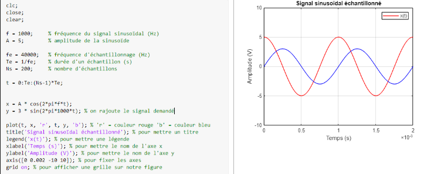

Création d'un Portfolio Personnel
Contexte :
Dans le cadre de mes projets de cette année, j’ai entrepris de créer un portfolio en ligne destiné à présenter mes projets et mes compétences, afin de valoriser mes acquis de manière accessible et professionnelle.
Objectif :
Mettre en avant mes réalisations et mes compétences à travers une vitrine en ligne moderne et structurée, pour améliorer ma visibilité et saisir de nouvelles opportunités professionnelles.
Travail réalisé :
- Conception et développement du site en HTML et CSS.
- Résolution de la difficulté rencontrée lors de la mise en place du menu déroulant grâce à la persévérance, la créativité et l’utilisation de ressources en ligne.
- Création d’un site interactif et esthétique, mettant en valeur mes projets et compétences.
Résultats :
Le projet a abouti à un site web interactif qui reflète mon parcours, mes compétences et mes réalisations. Cette expérience a renforcé mes compétences en développement web et m’a permis de créer une présence en ligne professionnelle efficace.
MATLAB
Contexte :
Dans le cadre d’un projet en mathématiques, j’ai utilisé le logiciel MATLAB pour programmer des solutions à des exercices, dans le but de traduire des raisonnements mathématiques en code.
Objectif :
Apprendre à programmer correctement des fonctions dans MATLAB et à appliquer les concepts mathématiques à la programmation, tout en développant une approche méthodique pour résoudre des problèmes.
Travail réalisé :
- Utilisation de MATLAB pour créer et tester des fonctions mathématiques.
- Identification et correction des erreurs liées à la transmission des valeurs aux fonctions.
- Relecture des bases de MATLAB et réalisation de plusieurs essais pour maîtriser la programmation des fonctions.
Résultats :
Cette expérience m’a permis de développer ma patience et ma capacité à trouver des solutions par moi-même, tout en consolidant mes compétences en programmation MATLAB et en résolution de problèmes mathématiques.
